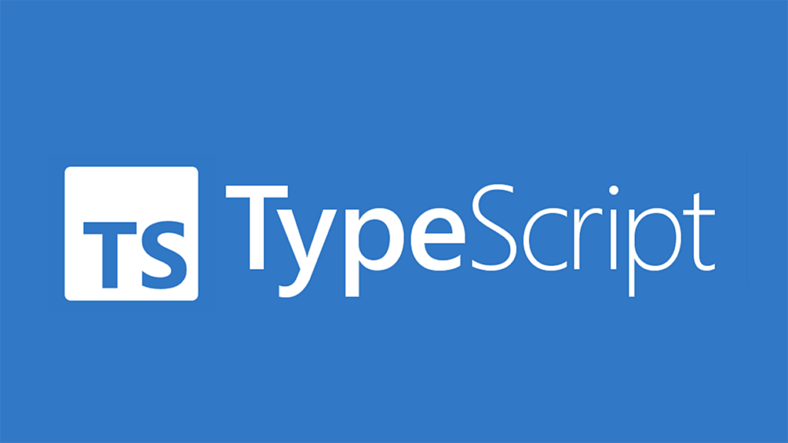
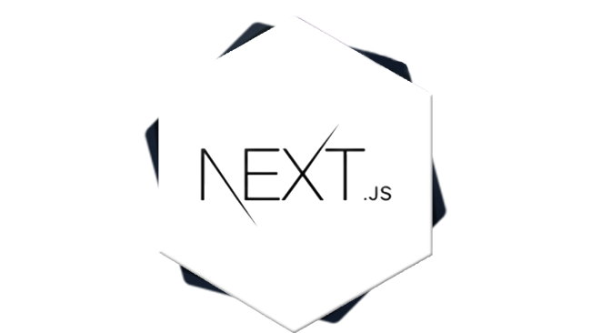
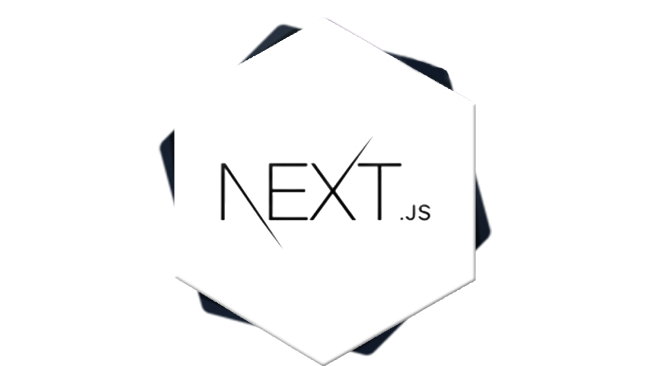
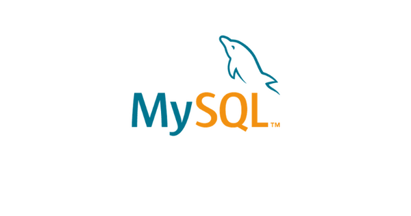
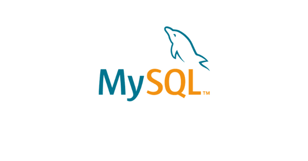
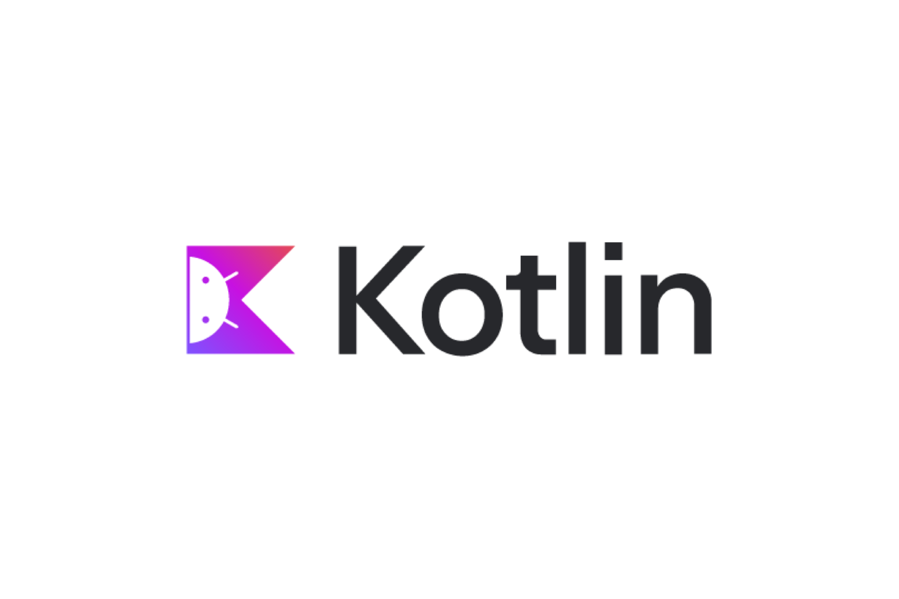
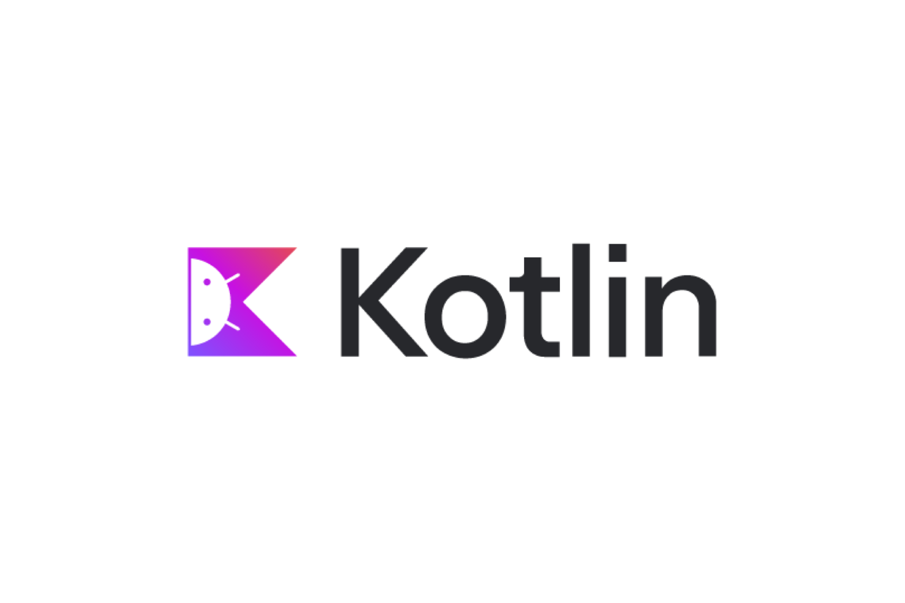

Front-end technologies
About Front end:
Front-end technologies are tools and frameworks used to create the user interface of web applications, focusing on enhancing user experience and interactivity. They involve core languages like HTML, CSS, and JavaScript to structure, style, and add functionality to web pages. Frameworks such as React, Angular, and Vue.js simplify the development of dynamic and responsive applications. Styling tools like Bootstrap and Tailwind CSS help in creating visually appealing and mobile-friendly designs. Modern practices like Progressive Web Apps (PWAs), accessibility (A11Y), and responsive design ensure usability across devices. Build tools like Webpack and Vite streamline development and optimize performance. Together, these technologies enable developers to craft fast, interactive, and scalable web applications
 html
html
 java script
java script
 React Native
React Native
 css
css
.jpg) Bootstrap
Bootstrap

Type Script
.jpg) Vue.Js
Vue.Js
.png) Angular

Next
Angular

Next
.png) gatsby
gatsby
Back-end technologies
About Backend:
Back-https://en.wikipedia.org/wiki/Python_(programming_language)end technologies handle the server-side logic, database interactions, and application functionality that power the front-end user experience. Key back-end languages include Python, Java, Ruby, PHP, Node.js, and C#. Frameworks like Django, Flask, Spring Boot, and Express.js streamline development by providing tools for routing, middleware, and APIs. Databases are essential for storing and managing data, with options like MySQL, PostgreSQL, MongoDB, and Redis. Authentication and security protocols, such as OAuth, JWT, and encryption, ensure secure user data handling. RESTful APIs and GraphQL enable seamless communication between front-end and back-end systems. Popular hosting and deployment platforms include AWS, Azure, and Heroku for scalable applications. Integration with DevOps tools like Docker and Kubernetes simplifies deployment and management.

 


.png) 


Mern stack technologies
About Mern stack:
The MERN stack is a collection of technologies that help developers build robust and scalable web applications using JavaScript. The acronym “MERN” stands for MongoDB, Express, React, and Node.js, with each component playing a role in the development process. MongoDB serves as a document-oriented database that can efficiently store data in JSON format. Express is a web application framework that provides a set of features to streamline the assembly of web applications. React is a front-end JavaScript library that offers a large toolkit for crafting user interfaces. Node.js is the runtime environment for execution of JavaScript code on the server side, coordinating communication between front-end and back-end components.


Mean stack technologies
About Mean stack:
The MEAN stack is a JavaScript-based framework for developing scalable web applications. The term MEAN is an acronym for MongoDB, Express, Angular, and Node — the four key technologies that make up the layers of the technology stack.

 W
W